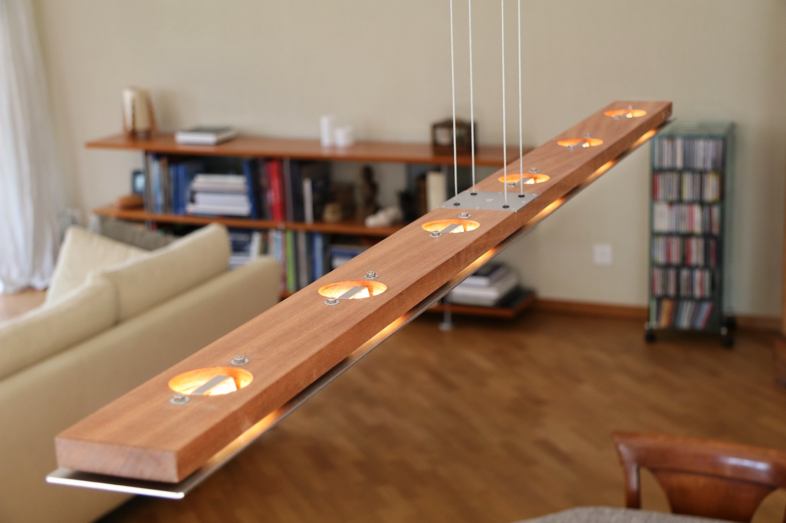
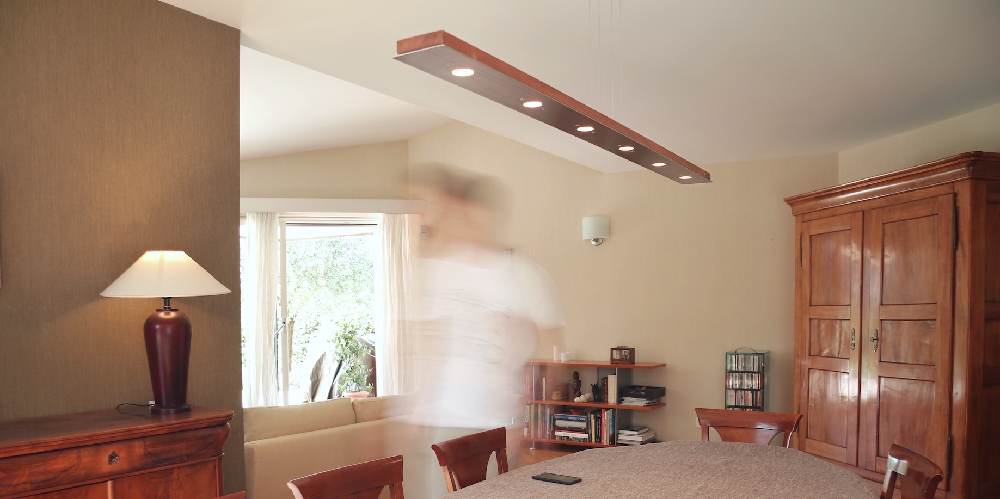
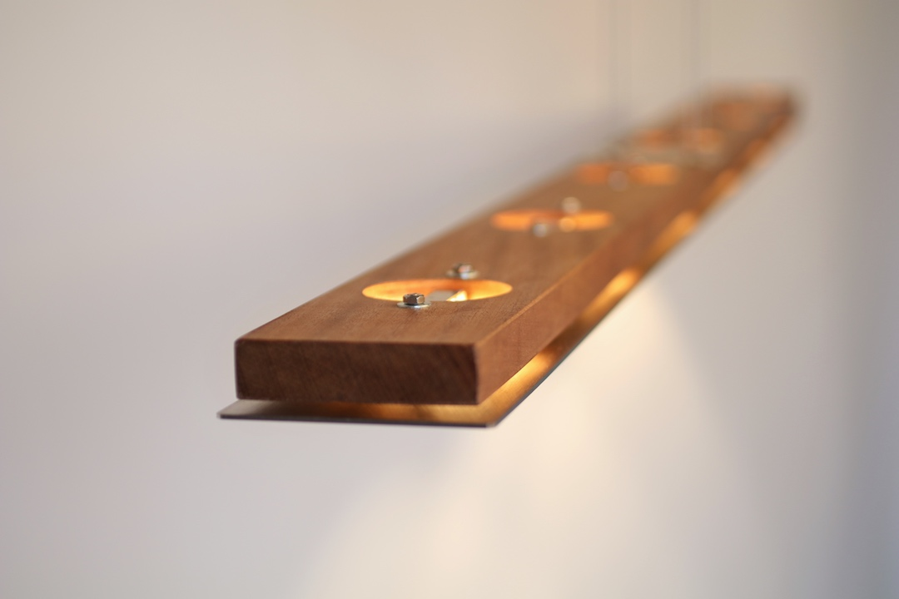
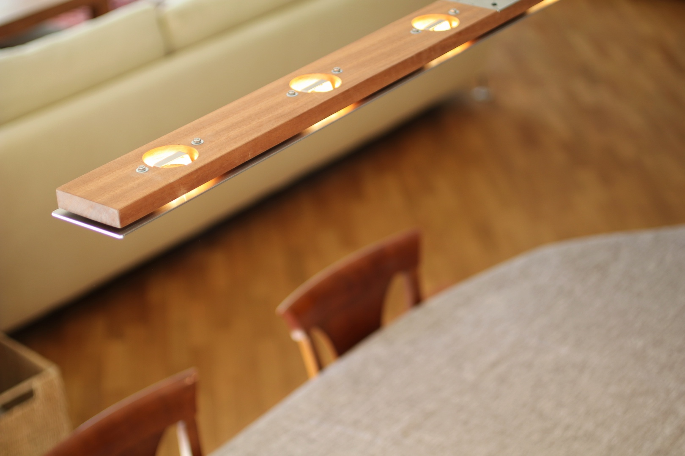
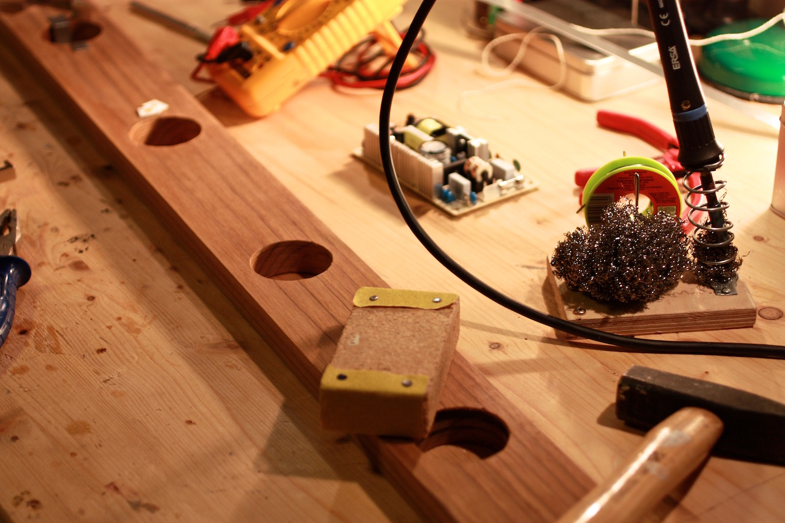

Photon - Dining Pendant Lamp
This lamp started off with a beam of wood. A thin plate of stainless steel floats just under it. The six LEDs that are placed throughout the beam shine a warm light towards the table. Photon also provides a soft ambiance illumination as the light reflects on the steel towards the ceiling and the lamp's sides through the gap between the metal and the wood.
The sheets of metal are laser cut. The lower reflective plate reflects the light and serves as a heat sink for the LEDs too.
 To provide an original design, I selected a four wire square configuration to support the lamp. This wire configuration requires to user to tune the length of each wire to enable the lamp to sit horizontally. To make things simple, I introduced a system that enables to tweak the length using two screws only (one for each rotation axis, X and Y). The height can be changed too.
The spec sheet for the lamp can be found here.
